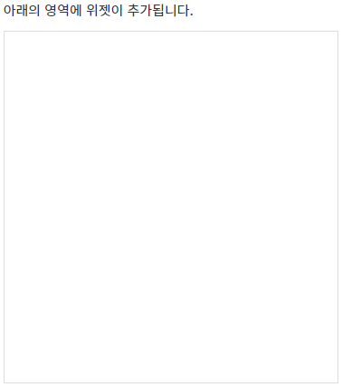
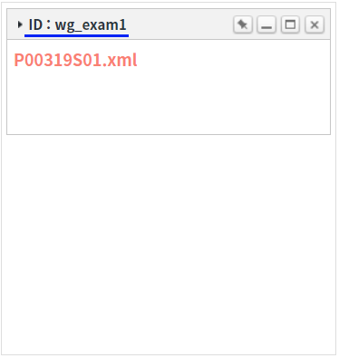
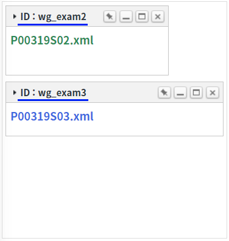
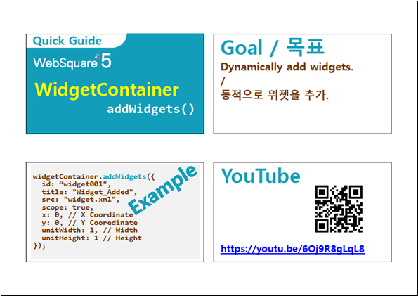
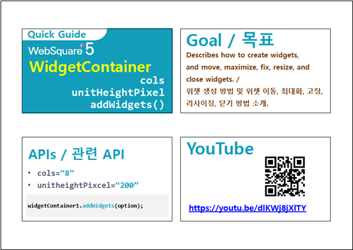

WidgetContainer에 위젯을 추가하는 기본 예제로 함수 'addWidgets'의 필수 설정 값을 확인할 수 있습니다.
단건 위젯 추가하기
다건 위젯 추가하기
STEP 1. 초기 상태를 확인합니다.
WidgetContainer에 추가된 위젯이 없습니다.
그림 1.브라우저(Chrome) 실행 예시

STEP 2. 단건 위젯 추가하기
버튼 단건 위젯 추가하기을 클릭합니다.STEP 3. 실행된 결과를 확인합니다.
위젯의 타이틀이 'ID : wg_exam1'인 위젯이 추가됩니다.
그림 2.브라우저(Chrome) 실행 예시

STEP 1. 초기 상태를 확인합니다.
WidgetContainer에 추가된 위젯이 없습니다.
그림 3.브라우저(Chrome) 실행 예시
STEP 2. 다건 위젯 추가하기
버튼 다건 위젯 추가하기을 클릭합니다.STEP 3. 실행된 결과를 확인합니다.
위젯의 타이틀이 'ID : wg_exam2'와 'ID : wg_exam3'인 위젯 2개가 추가됩니다.
그림 4.브라우저(Chrome) 실행 예시

WidgetContainer의 함수 'addWidgets'를 이용하여 스크립트를 작성합니다. 함수 'addWidgets'의 첫 번째 인자에 위젯 정보가 담긴 JSON을 할당합니다. 세부 지정은 아래의 스크립트 예시에 작성되어 있습니다.
스크립트
// 위젯 생성 옵션 정보 let widgetOptions = {}; // [필수] 위젯 ID. 동일한 ID를 가진 위젯이 있으면 추가되지 않습니다. widgetOptions.id = "wg_exam1"; // [필수] 위젯 파일 경로 widgetOptions.src = "/page/P00319S01.xml"; // [필수] scope 적용 여부로 true 고정 widgetOptions.scope = true; // [필수] 위젯 너비 : (설정 값 / WidgetContainer의 속성 'col'의 설정 값 * 100)으로 '%'단위로 그려집니다. widgetOptions.unitWidth = 4; // [필수] 위젯 높이 : (설정 값 * WidgetContainer의 속성 'unitHeightPixel'의 설정 값)으로 'px'단위로 그려집니다. widgetOptions.unitHeight = 6; // [권장] 위젯 타이틀 widgetOptions.title = "ID : wg_exam1"; // 위젯의 x 위치 widgetOptions.x = 0; // 위젯의 y 위치 widgetOptions.y = 0; // WidgetContainer 'wgc_exam1'에 위젯 1개를 추가합니다. wgc_exam1.addWidgets(widgetOptions); // 추가된 위젯이 있는지의 여부를 판단할 때 함수 'getWidgetByTitle( id )'를 사용할 수 있습니다.
WidgetContainer의 함수 'addWidgets'를 이용하여 스크립트를 작성합니다. 함수 'addWidgets'의 첫 번째 인자에 위젯 정보가 담긴 JSON을 Array에 담아 할당합니다. 세부 지정은 아래의 스크립트 예시에 작성되어 있습니다.
스크립트
// 위젯 'wg_exam2' 생성 옵션 정보 let widgetOptions1 = {}; // [필수] 위젯 ID. 동일한 ID를 가진 위젯이 있으면 추가되지 않습니다. widgetOptions1.id = "wg_exam2"; // [필수] 위젯 파일 경로 widgetOptions1.src = "/page/P00319S02.xml"; // [필수] scope 적용 여부로 true 고정 widgetOptions1.scope = true; // [필수] 위젯 너비 : (설정 값 / WidgetContainer의 속성 'col'의 설정 값 * 100)으로 '%'단위로 그려집니다. widgetOptions1.unitWidth = 3; // [필수] 위젯 높이 : (설정 값 * WidgetContainer의 속성 'unitHeightPixel'의 설정 값)으로 'px'단위로 그려집니다. widgetOptions1.unitHeight = 5; // [권장] 위젯 타이틀 widgetOptions1.title = "ID = wg_exam2"; // 위젯의 x 위치 widgetOptions1.x = 0; // 위젯의 y 위치 widgetOptions1.y = 6; // 위젯 'wg_exam3' 생성 옵션 정보 (주석 생략) let widgetOptions2 = {}; widgetOptions2.id = "wg_exam3"; widgetOptions2.src = "/page/P00319S03.xml"; widgetOptions2.scope = true; widgetOptions2.unitWidth = 4; widgetOptions2.unitHeight = 4; widgetOptions2.title = "ID = wg_exam3"; widgetOptions2.x = 0; widgetOptions2.y = 11; // WidgetContainer 'wgc_exam1'에 위젯 2개를 추가합니다. 위젯의 생성 정보 JSON을 Array에 담아 인자로 할당합니다. wgc_exam1.addWidgets([widgetOptions1, widgetOptions2]); // 추가된 위젯이 있는지의 여부를 판단할 때 함수 'getWidgetByTitle( id )'를 사용할 수 있습니다.
addWidgets( option )
option.id
option.src
option.scope
option.unitWidth
option.unitHeight
option.title
option.x
option.y
[웹스퀘어5 SP5 개발 가이드] WidgetContainer
링크 : https://docs1.inswave.com/sp5_user_guide/2059d4ce88b2fc16#6f01c6c535be09d8
WidgetContainer - 위젯 추가 (addWidgets())
링크 : https://www.youtube.com/embed/6Oj9R8gLqL8

WidgetContainer - 위젯의 크기 지정
링크 : https://www.youtube.com/embed/dlKWj8jXlTY
